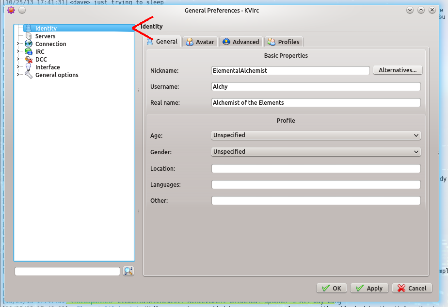
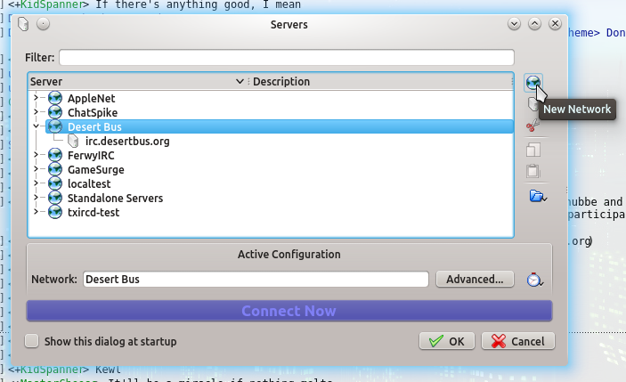
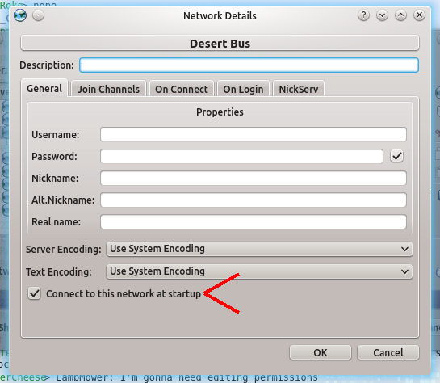
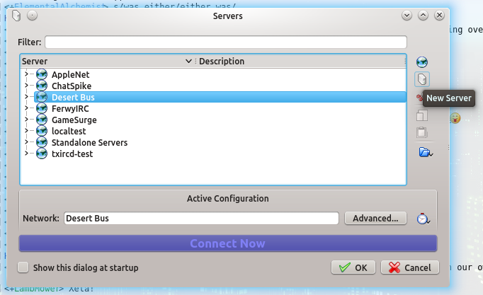
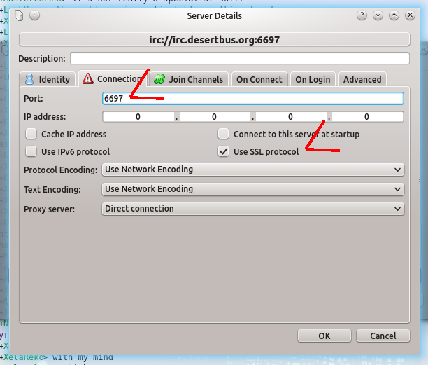
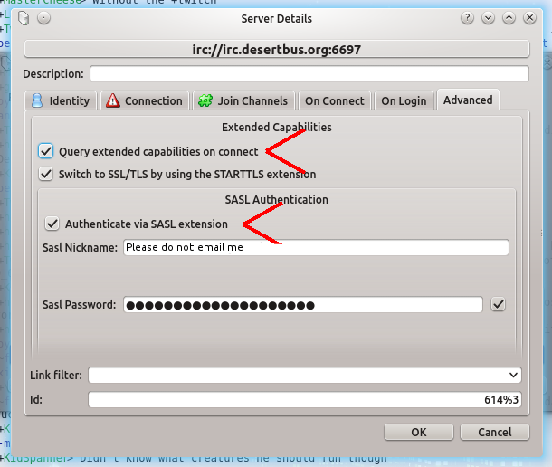
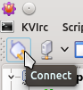
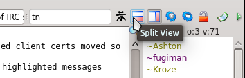

KVIrc is a cross-platform client with many features. You can find it at its website.
If you're running the client for the first time, you'll want to set up a default nickname and ident (username). Navigate to Settings > Configure KVIrc... and open the Identity section:
You'll want to fill in a default Nickname, Username, and Real name. This doesn't have to be your actual real name. You may put in whatever you like for these fields. Realize that the nick and the username cannot contain spaces. The rest of the fields here and in the other tabs in the Identity section are optional. You may fill them out if you wish.
Before you get connected, you'll want to set up the server connection. This allows you to save the server to easily connect to it in the future or set it up to automatically connect when you start the client. This process consists of setting up the network and the server, and optionally also consists of setting up to automatically connect to the network and setting up autoidentification to your Desert Bus Donor Account.
To do this, go to Settings > Configure Servers.... When the dialog opens, click the New Network icon:
This creates and automatically selects an entry titled "New Network." Type in an appropriate name in the box below (e.g. "Desert Bus").
If you'd like to automatically connect to the network when you start KVIrc, click on the Advanced... button and check the box marked Connect to this network at startup.
No further settings must be adjusted. The empty boxes will pull the default nickname/username information you already entered from the global settings.
With the new network created, click the "New Server" icon:
A server called "irc.unknown.net" will be created and automatically selected. In the box at the bottom of the dialog box, change the name to irc.desertbus.org and click on the Advanced... button.
The first tab that opens is the identity tab. All of these boxes can be left blank; unless you change them, they will pull in the information from your default nickname/username settings, which you already set up.
If you would rather connect using SSL, navigate to the Connection tab. Set the port to 6697 and check the Use SSL Protocol box.
If you have a Desert Bus Donor Account, you will want to set up automatic identification so that you are automatically identified to your account when you connect and can easily take advantage of the benefits being identified will give you (being able to bid, etc.) without going through more hassle later. In order to do this, navigate to the Advanced tab of the server setup. In order to auto-identify, you need to check the Query extended capabilities on connect and the Authenticate via SASL extension boxes. Your Sasl Nickname is the email address you use to log into your Donor Account, and your Sasl Password is your Donor Account password.
You're done setting up! Click OK in your Server Details dialog, and then click the giant blue Connect Now button. The server is set up, and you're now connected to the chat!
To connect in the future (unless you set up autoconnect), find the Desert Bus (or whatever you named it) server in the server tree on the left side of your screen, select it, and click the Connect button on the top.
Desert Bus is a crazy time. Lots of people go in and out of the channel, and all the join/part notices can get in the way of the chatting going on. You can move non-messages (joins, parts, mode changes, etc.) to a separate pane from the conversation by clicking the Split View icon on the top-right of the window. This moves joins/parts/etc. out of the way of text. You may shrink the joins/parts/etc. pane to focus on the conversation.
